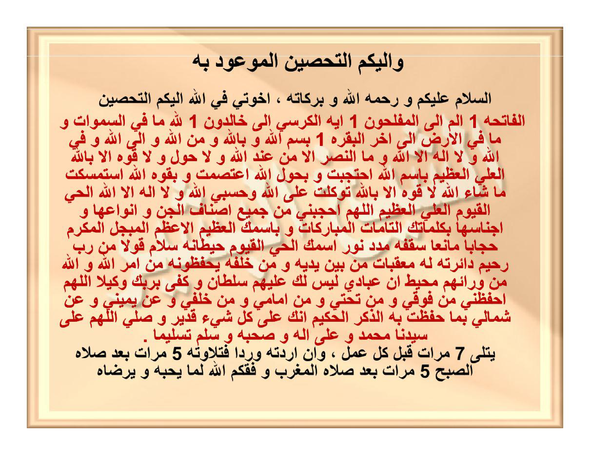

Wa ilaikumut-tahshīnul-mau'ūdu bihī.
As-salāmu 'alaikum wa rahmatullāhi wa barakātuhū, ikhwatī fillāhi ilaikumut-tahshīnu:
Al-Fātihata 1, Alif-Lām-Mīm ilal-muflihūna 1, Āyatal-Kursiyyi ilā khālidūna 1, Lillāhi mā fis-samāwāti wa mā fil-ardhi ilā ākhiril-Baqarati 1, bismillāhi wa billāhi wa minallāhi wa ilallāhi wa fillāhi wa lā ilāha illallāhu wa man-nashru illā min 'indillāhi wa lā haula wa lā quwwata illā billāhil-'Aliyyil-'Azhīmi, bismillāhi-htajabtu wa bihaulillāhi-'tashamtu wa biquwwatillāhi-stamsaktu mā syā'allāhu lā quwwata illā billāhi tawakkaltu 'alallāhi wa hasbiyallāhu wa lā ilāha illallāhul-Hayyul-Qayyūmul-'Aliyyul-'Azhīmu, Allāhummahjubnī min jamī'i ashnāfil-jinni wa anwā'ihā wa ajnāsihā bikalimātikat-tāmmātil-mubārakāti wa bismikal-'azhīmil-a'zhamil-mubajjalil-mukarrami hijāban māni'an saqfuhū madadu nūrismikal-Hayyil-Qayyūmi hīthānuhū salāmun qaulan min Rabbin Rahīmin dā'iratuhū lahū mu'aqqibātun min baini yadaihi wa min khalfihī yahfazhūnahū min amrillāhi wallāhu min warā'ihim muhīthun inna 'ibādī laisa laka 'alaihim sulthānun wa kafā birabbika wakīlan, Allāhummahfazhnī min fauqī wa min tahtī wa min amāmī wa min khalfī wa 'an yamīnī wa 'an syimālī bimā hafizhta bihidz-dzikral-hakīma innaka 'alā kulli syai'in qadīrun wa shallillāhumma 'alā sayyidinā Muhammadin wa 'alā ālihī wa shahbihī wa sallim taslīman.
Yutlā 7 marrātin qabla kulli 'amalin, wa in aradtahū wirdan fatilāwatuhū 5 marrātin ba'da shalātish-shubhi 5 marrātin ba'da shalātil-maghribi waffaqakumullāhu limā yuhibbuhū wa yardhāhu.
Dan inilah untuk kalian Tahshīn (benteng penjagaan diri) yang telah dijanjikan.
Assalamu'alaikum warahmatullahi wabarakatuh. Wahai saudara-saudaraku karena Allah, inilah bacaan Tahshīn:
Membaca Surah al-Fatihah 1 kali, Alif-Lām-Mīm hingga al-muflihūn (QS. al-Baqarah: 1–5) 1 kali, Ayat Kursi hingga khālidūn (QS. al-Baqarah: 255–257) 1 kali, Lillāhi mā fis-samāwāti wa mā fil-ardh hingga akhir Surah al-Baqarah (QS. al-Baqarah: 284–286) 1 kali. Dengan menyebut nama Allah, dengan pertolongan Allah, dari Allah, menuju kepada Allah, dan di jalan Allah; tidak ada tuhan yang berhak disembah selain Allah, tidak ada kemenangan melainkan dari sisi Allah, serta tiada daya dan tiada kekuatan melainkan dengan pertolongan Allah Yang Maha Tinggi lagi Maha Agung. Dengan nama Allah aku berhijab (membentengi diri), dengan daya upaya Allah aku berlindung teguh, dan dengan kekuatan Allah aku berpegang erat; atas kehendak Allah (mā syā'allāh), tiada kekuatan melainkan dengan pertolongan Allah; aku bertawakal kepada Allah, cukuplah Allah bagiku, dan tidak ada tuhan selain Allah Yang Maha Hidup, Yang Maha Berdiri Sendiri mengurus makhluk-Nya, Yang Maha Tinggi, lagi Maha Agung. Ya Allah, hijablah (bentengilah) aku dari seluruh golongan jin beserta segala macam dan jenisnya dengan kalimat-kalimat-Mu yang sempurna lagi diberkahi, dan dengan Nama-Mu Yang Maha Agung lagi Paling Agung, yang diagungkan lagi dimuliakan, dengan hijab (benteng) yang kokoh menghalangi: yang atapnya adalah pancaran cahaya Nama-Mu al-Hayyul-Qayyūm; dinding-dindingnya adalah firman-Mu: “(Kepada mereka dikatakan): Salām (keselamatan), sebagai ucapan dari Tuhan Yang Maha Penyayang” (QS. Yāsīn: 58); dan lingkarannya adalah firman-Mu: “Baginya (manusia) ada malaikat-malaikat yang selalu menjaganya bergiliran, dari depan dan belakangnya; mereka menjaganya atas perintah Allah” (QS. ar-Ra'd: 11), “Padahal Allah mengepung dari belakang mereka” (QS. al-Burūj: 20), serta “Sesungguhnya hamba-hamba-Ku, tidak ada kekuasaan bagimu atas mereka; dan cukuplah Tuhanmu sebagai Penjaga” (QS. al-Isrā': 65 / al-Hijr: 42). Ya Allah, jagalah aku dari arah atasku, dari arah bawahku, dari arah depanku, dari arah belakangku, dari sebelah kananku, dan dari sebelah kiriku, sebagaimana Engkau telah menjaga adz-Dzikrul-Hakīm (Al-Qur'an yang penuh hikmah); sesungguhnya Engkau Maha Kuasa atas segala sesuatu. Dan limpahkanlah shalawat, ya Allah, atas junjungan kita Muhammad beserta keluarga dan para sahabat beliau, serta limpahkanlah keselamatan yang sebenar-benarnya.
Dibaca sebanyak 7 kali sebelum setiap amalan; dan apabila engkau menginginkannya sebagai wirid harian, maka bacaannya adalah 5 kali setelah shalat Subuh dan 5 kali setelah shalat Maghrib. Semoga Allah memberikan taufik kepada kalian menuju apa yang dicintai dan diridhai-Nya.
